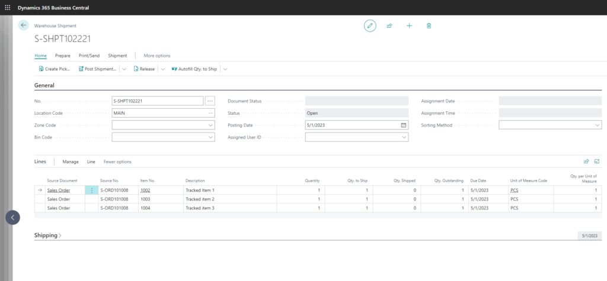
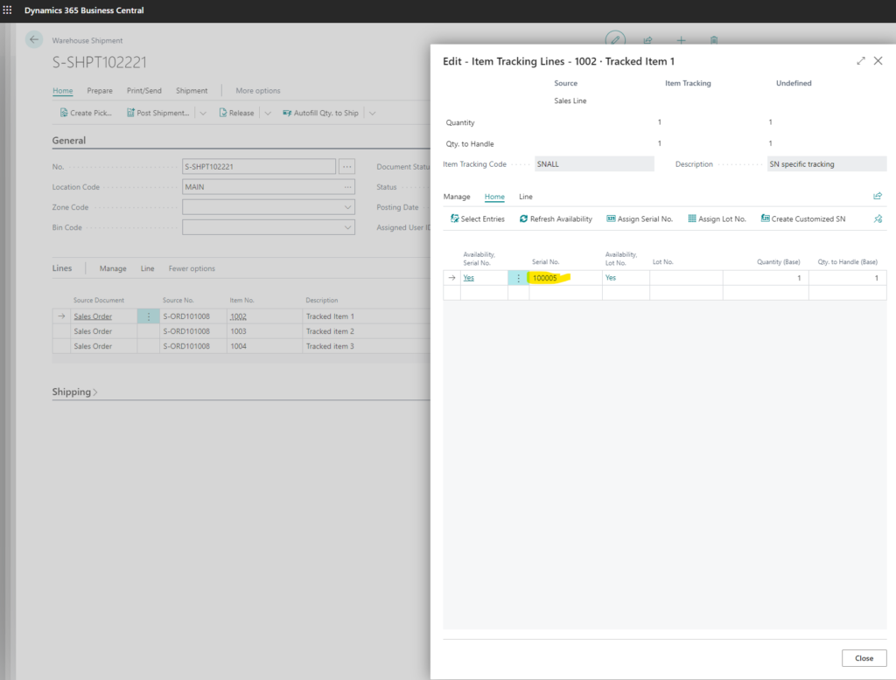

Few weeks ago I experimented with Powerapps and Business Central integration. I liked it and I wanted to do more with it.
So here's another try to push a bit the Powerapps and see how flexible it can be to handle more complicated business requirements.
My business requirements are the following:
I want to sell products to a Customer via Sales Orders. From Sales Order I will create a Sales Shipment document so the warehouse can ship the goods.
Warehouse will use the Powerapps app to select a Shipment Document they are working on and then scan the barcodes of all the items required on the order.
They don't manually select items but only scan the barcode and that must update all the information required.
What I need from Power Apps:
- List of all Warehouse Shipments
- I should be able to go into a Shipment and see the details
- I should be able to scan barcode and on the Warehouse Shipment Line the Serial Numbers and quantities must be updated
- After I should be able to post the Shipment
How I did it
First off I created a custom API pages in the Business Central with bound actions to update the Serial No's on the Shipment Lines item tracking.
Then I have to create a Sales Order and from the Sales Order a Sales Shipment in Business Central:

And then I can handle them in the mobile Power App:

Thats it, now the Sales Shipment can be posted with correct Serial No's:

How the Serial No's are added in BC?
I have bound action on the API Page in Business Central:
[ServiceEnabled]
procedure UpdateLineFromScanner(SerialNo: Code[50])
var
ItemLedgerEntry: Record"Item Ledger Entry";
WarehouseShipmentLine: Record"Warehouse Shipment Line";
ErrorItemNotFound: Label 'Item not found for serial no: %1';
begin
ItemLedgerEntry.SetRange("Serial No.", SerialNo);
ItemLedgerEntry.SetRange(Open, true);
ItemLedgerEntry.SetRange("Location Code", Rec."Location Code");
if ItemLedgerEntry.FindFirst() then begin
WarehouseShipmentLine.SetRange("No.", Rec."No.");
WarehouseShipmentLine.SetRange("Item No.", ItemLedgerEntry."Item No.");
if WarehouseShipmentLine.FindFirst() then begin
AddSerialNoToSalesShipmentLine(ItemLedgerEntry."Item No.", ItemLedgerEntry."Location Code", WarehouseShipmentLine."Source No.", WarehouseShipmentLine."Source Line No.", ItemLedgerEntry."Serial No.", ItemLedgerEntry.Quantity, ItemLedgerEntry.Quantity, ItemLedgerEntry."Qty. per Unit of Measure");
end;
end else
Error(ErrorItemNotFound, SerialNo);
end;In Power Apps I'll call this action like this:
Set(ActionResponse, 'ClickabuttoninPowerAppstosendanemail-2'.Run(SelectedWarehouseOrderNo,BarcodeScanner1.Value));After Scanning I'll refresh the data:
Refresh('orderreserventries (integratedee/apis/v1.0)');What do I think after the second Power App?
I think Power Apps is a good tool to build addons to Business Central. It is much more flexible then BC own mobile app. I think this can handle quite complex business requirements and I look forward for customer project where I can use this.